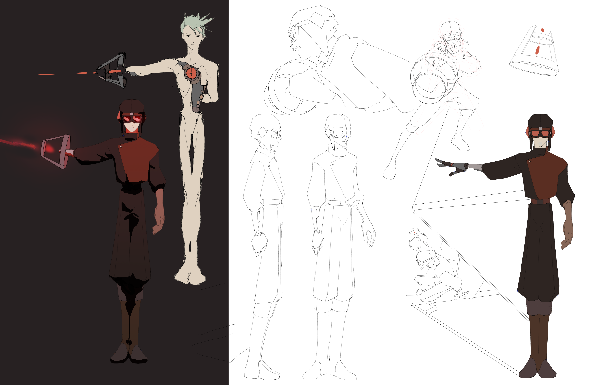
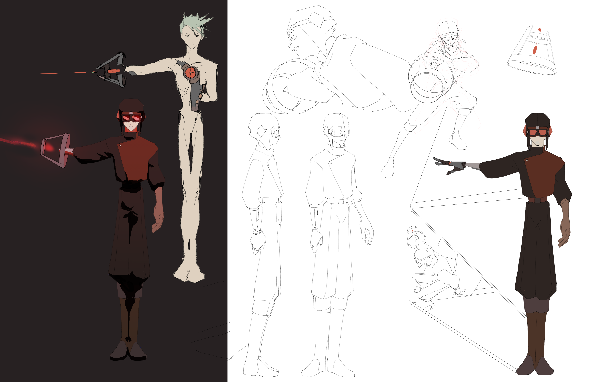

TEMPEST
Inside a giant hurricane, Mytep, a soldier who has long given up questioning his purpose, is sent out on his own to take down the immortal wizard Naim. Meaninglessly exchanging blows, Mytep tries in a last kamikaze effort to defeat Naim, but with the wizard's power to rewind time, he's caught in an everlasting loop. Supervised by Daniel Cuervo Music & SFX: Omso (Krypaw on Audius) Clean-up help: @hopalynes-art 3D plane mock-up: Daniel Meerson
portfolio text here


 
